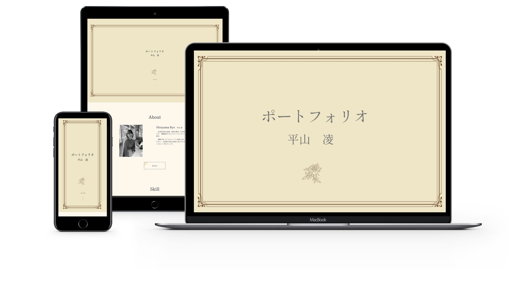
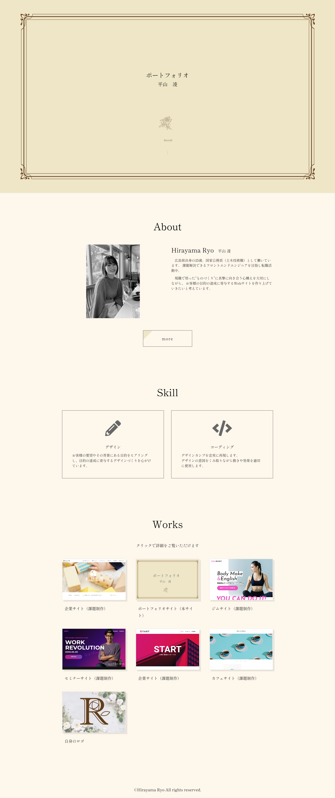
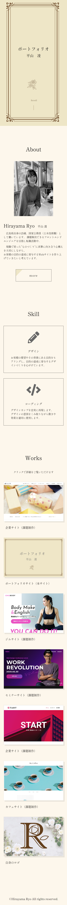

ポートフォリオ（本サイト）
-
概要
平山凌のポートフォリオ
-
目的
スキルや人柄に興味を持っていただき、未経験でも雇いたいと思っていただくため
-
ペルソナ
- Web制作会社の採用担当の方
- 様々なポートフォリオを見てきており、長く一緒に働ける人を探している
- これまでどのような経験をし、どの程度のスキルがあり、仕事に活かしていきたいと思っているのかを知りたい
- 利用シーンは、書類選考や面接時にスマホやパソコンから閲覧することを想定
-
コンテンツ
ペルソナがポートフォリオに求める条件として、「人物を知る」や「スキルの把握」というキーワードが出てきました。そのため、どのようなコンテンツがあればペルソナに人となりやスキルについて理解していただけるか、という切り口からコンテンツを考え、優先順位をつけました。
- About
どのような想いで転職活動をしているかが伝わるよう、目指す将来像を文字にしました。ページ上部に顔写真を配置し、目を向けてもらうと同時に親しみを持っていただけるようにしました。 - Skill
主観的にならないよう気を付けながら、今できることを端的にまとめました。 - Works
ペルソナに実績をチェックしていただく時間は限られているため、自信のある制作物を最初に配置しました。モックアップを使用し、レスポンシブデザインであることを伝わりやすくしました。
- About
-
デザイン
「紙面のように読みやすく、迷わないデザイン」
私の知識の根源である本を参考に、読みやすく見る人が迷わないデザインを目指しました。
homeのメインビジュアルは、本では表紙にあたると思い、文庫本の表紙を連想させるデザインを採用しました。はじめての本を読むときのように、わくわくしながら表紙をめくって（スクロールして）いただきたいと願いを込めました。画面いっぱいに表紙を表示するため、スクロールを促すスクロールダウンが少し遅れて表示されるようにしました。
小説や自分史のような本の場合、長時間読んでも目を疲れにくくするため、白色度を下げた淡いクリーム色の紙が用いられています。これを参考に、背景色は真っ白ではなく少し黄みがかった色を採用しました。
フォントは、読みやすく柔らかい印象の"しっぽり明朝"を採用しました。 -
制作期間
約1ヶ月間
-
制作範囲
企画/デザイン/コーディング/公開
-
言語
HTML/CSS/jQuery
-
コーディング手法
レスポンシブ対応/ハンバーガーメニューの実装/スクロールダウンの表示/ヘッダーの表示切り替え
-
PC
 -
SP
